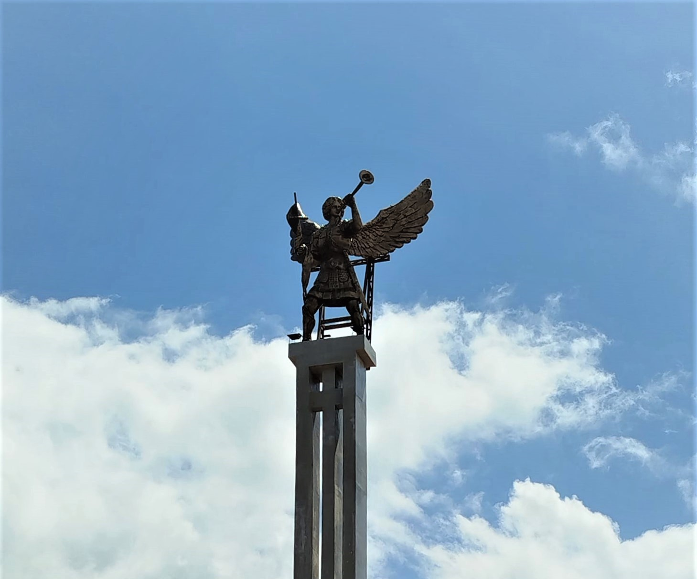
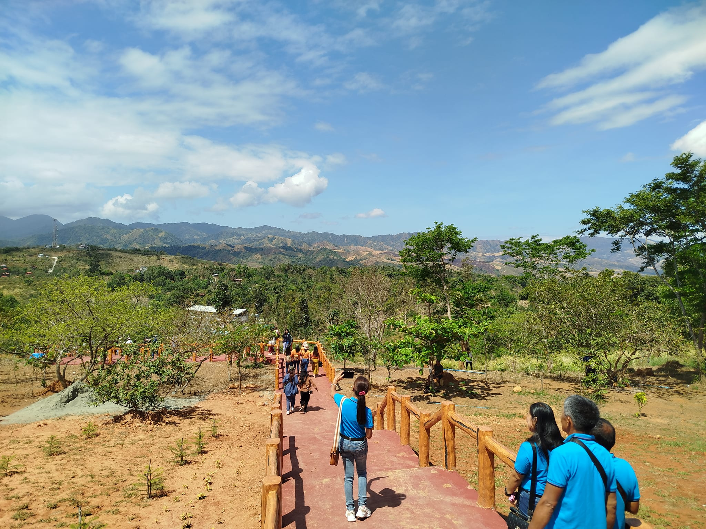
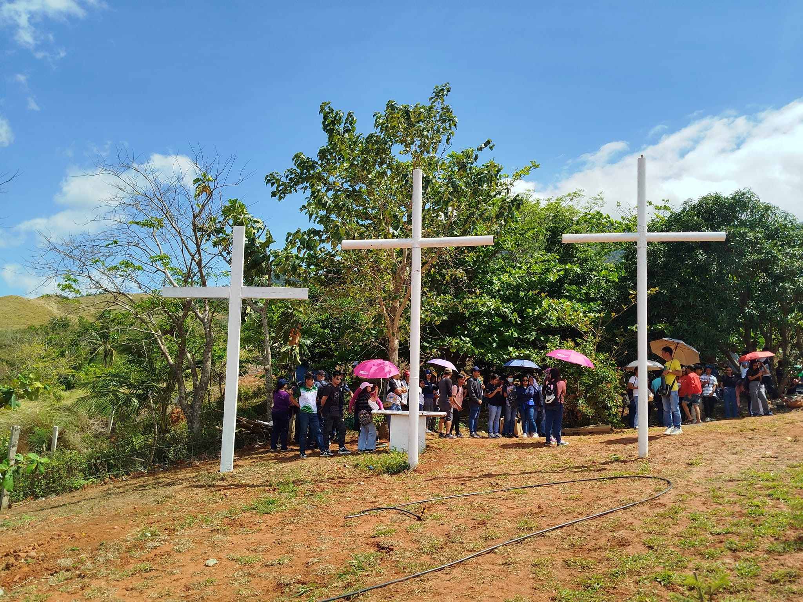

Ascend Beyond the Physical



Climb Duration
5-10 minutes total
Difficulty Level
Moderate to Challenging
Best Time
Early morning start
Group Size
Small groups preferred
What to Bring
Water, snacks, proper gear
Summit Features
Spiritual shrine & views